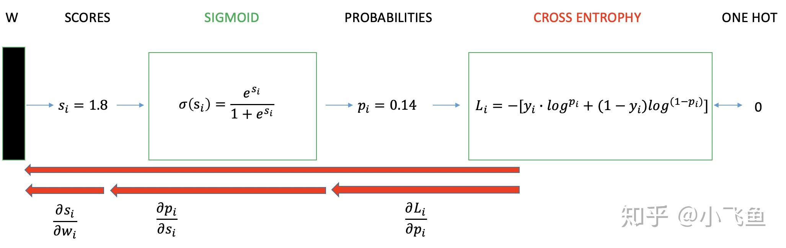
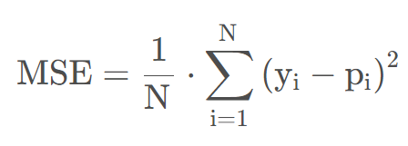

Machine Learning Engineer (Ads) Interview Questions
A Guide to Pass the MLE interview.
1 损失函数的计算过程

2 损失函数一览
3 分类的损失函数
损失函数可以让我们对模型进行评估，并且为模型参数的优化提供了方向，但没有任何一种损失函数适用于所有的模型。损失函数的选取依赖于参数的数量、异常值、机器学习算法、梯度下降的效率、导数求取的难易和预测的置信度等若干方面。
我们用神经网络最后一层输出的情况，来看一眼整个模型预测、获得损失和学习的流程：
- 神经网络最后一层得到每个类别的得分 scores ；
- 该得分经过 sigmoid(或softmax)函数 获得概率输出；
- 模型预测的类别概率输出与真实类别的one hot形式进行交叉熵损失函数的计算。
3.1 0-1损失
0-1损失：预测值和目标值不相等为1，否则为0
缺点：定义过于严格，如果真实值为1，预测值为0.999，预测应该正确，但是上式会判定为预测错误，可以对其改进为感知损失；由于其非凸、非光滑的特点，算法很难直接对该函数进行优化。可以使用合页损失或交叉熵损失。
3.2 感知损失
感知损失：引入超参数阈值t，大于t为1，小于t为0
3.3 合页损失（Hinge Loss）
合页损失在SVM中解决几何间隔最大化问题，它是0-1损失函数相对紧的凸上界 且当真实值与预测值相等时loss=0但不可导，因此不能用梯度下降法进行优化，而是用次梯度下降法：
3.4 指数损失
AdaBoost使用指数损失做为损失函数：
3.5 对数似然损失
对数似然损失是对预测概率的似然估计，其最小化的本质是利用样本中的已知分布，求解导致这种分布的最佳模型参数，使这种分布出现概率最大。它衡量的是预测概率分布和真实概率分布的差异性，取值越小越好。其标准形式为：
对数似然损失函数在二分类时可以化简为交叉熵损失函数。交叉熵表示两个概率分布之间的距离，交叉熵越大，两个概率分布距离越远，概率分布越相异；交叉熵越小，两个概率分布距离越近，概率分布越相似，通过交叉熵可以判断哪个预测结果与标准答案更接近。
交叉熵损失函数的计算公式为：
其中y∈{0，1}，p表示模型预测样本为1的概率
在多分类问题中的计算公式：
N为样本数，C为类别数，y=1表示第i条样本的类别为j，p为样本i是类别j的概率。
3.6 对比
4 回归的损失函数
4.1 平均绝对误差（MAE）
平均绝对误差(Mean Absolute Error, MAE)，L1范数损失。MAE是目标值与预测值之差绝对值的和再取平均，因为预测误差有正有负，绝对值可以避免正负抵消，不需要考虑误差的方向。其中，N为样本数，y是真实值，p是预测值
4.2 均方误差（MSE）
均方误差(Mean Squared Error, MSE)，L2范数损失。MSE是目标值与预测值之差平方和再取平均，能够很好地反映回归模型预测值与真实值的偏离程度。

MAE和MSE的对比
分析
MSE计算简便，但MAE对异常点有更好的鲁棒性。
对异常值的鲁棒性
MSE对误差取了平方（令e=真实值-预测值），因此若e>1，则MSE会进一步增大误差。如果数据中存在异常点，那么e值就会很大，而e²则会远大于|e|。因此，相对于使用MAE计算损失，使用MSE的模型会赋予异常点更大的权重。用RMSE（即MSE的平方根，同MAE在同一量级中）计算损失的模型会以牺牲了其他样本的误差为代价，朝着减小异常点误差的方向更新。然而这就会降低模型的整体性能。
直观上可以这样理解：如果我们最小化MSE来对所有的样本点只给出一个预测值，那么这个值一定是所有目标值的平均值。但如果是最小化MAE，那么这个值，则会是所有样本点目标值的中位数。对异常值而言，中位数比均值更加鲁棒，因此MAE对于异常值也比MSE更稳定。
训练的稳定性/效率
MAE存在一个严重的问题（特别是对于神经网络）：更新的梯度始终相同，也就是说，即使对于很小的损失值，梯度也很大。这样不利于模型的学习。为了解决这个缺陷，可以使用变化的学习率，在损失接近最小值时降低学习率。
MSE在这种情况下的表现就很好，即便使用固定的学习率也可以有效收敛。MSE损失的梯度随损失增大而增大，而损失趋于0时则会减小。这使得在训练结束时，使用MSE模型的结果会更精确。
如何选择
如果训练数据被异常点所污染（比如，在训练数据中存在大量错误的反例和正例标记，但是在测试集中没有这个问题）或者异常点代表在商业中很重要的异常情况，并且需要被检测出来，则应选用MSE损失函数。相反，如果只把异常值当作受损数据，则应选用MAE损失函数。
二者都有的问题
在某些情况下，上述两种损失函数都不能满足需求。例如，若数据中90%的样本对应的目标值为150，剩下10%在0到30之间。那么使用MAE作为损失函数的模型可能会忽视10%的异常点，而对所有样本的预测值都为150。这是因为模型会按中位数来预测。而使用MSE的模型则会给出很多介于0到30的预测值，因为模型会向异常点偏移。上述两种结果在许多商业场景中都是不可取的。最简单的办法是对目标变量进行变换。而另一种办法则是换一个损失函数。
4.3 均方根误差（RMSE）
均方根误差(Root Mean Squared Error, RMSE)是对MSE进行了开根号处理，使loss与标签值在量级上统一。
4.4 加权平均绝对误差（WMAE）
加权平均绝对误差(Weighted Mean Absolute Error, WMAE)是基于MAE的变种评估指标，对每条样本考虑不同的权重，比如考虑时间因素，离当前时间越久的样本权重越低。
4.5 平均绝对百分比误差（MAPE）
平均绝对百分比误差（Mean Absolute Percent Error，MAPE）把每个点的误差进行了归一化，通过计算绝对误差百分比来表示预测效果，降低了个别离群点带来的绝对误差的影响。计算与量纲无关，在特定场景下不同问题具有一定可比性，如MAPE = 10，这表示预测平均偏离真实值10%。它定义为：
MAPE的缺点：在真实值0处无定义，如果真实值接近0可能导致MAPE大于100%。而且，MAPE对负值误差的惩罚大于正值误差。基于这些缺点从也有一些改进的评价指标，如MASE,sMAPE、MDA。
4.6 均方根对数误差（RMSLE）
均方根对数误差(Root Mean Squared Logarithmic Error, RMSLE )对预测值偏小样本的惩罚比对预测值偏大样本的惩罚大，如二手手机真实售价是2000元，预测成1800元的惩罚会比预测成2200元的大。如果损失函数选用RMSLE，没办法直接优化RMSLE，通常会先对预测目标进行对数变换y = log(y+1)，使用RMSE作为损失函数，最后预测值再还原p = exp(p)-1。
4.7 平滑的平均绝对误差（Huber Loss）
L1损失对于异常值更鲁棒，但它的导数不连续，在寻找最优解时收敛较慢；L2损失对于异常值敏感，但在优化过程中更为稳定和准确。
Huber损失对数据中的异常点没有平方误差损失那么敏感。它在0也可微分。本质上，Huber损失是绝对误差，只是在误差很小时，就变为平方误差。
如何选择
使用MAE训练神经网络最大的一个问题就是不变的大梯度，这可能导致在使用梯度下降快要结束时，错过了最小点。而对于MSE，梯度会随着损失的减小而减小，使结果更加精确。在这种情况下，Huber损失就非常有用。它会由于梯度的减小而落在最小值附近。比起MSE，它对异常点更加鲁棒。因此，Huber损失结合了MSE和MAE的优点。但是，Huber损失的问题是可能需要不断调整超参数delta。
4.8 对数双曲余弦损失（Log-Cosh Loss）
log(cosh(x))是平滑的MSE，对于小的误差≈x^2/2，对于大的误差≈abs(x)-log2，在拥有MSE优点的同时也不会受到异常值的太多影响。 它拥有Huber的所有优点，相比Huber，它的优点在于在每一个点都是二次可导的。
如何选择
许多机器学习模型如XGBoost，就是采用牛顿法来寻找最优点。而牛顿法就需要求解二阶导数（Hessian）。因此对于诸如XGBoost这类机器学习框架，损失函数的二阶可微是很有必要的。但Log-cosh损失也并非完美，其仍存在某些问题。比如误差很大的话，一阶梯度和Hessian会变成定值，这就导致XGBoost出现缺少分裂点的情况。
4.9 R方损失
分子是模型预测产生的错误，分母是使用真实值为y的均值产生的错误，R方越大犯错误越小。
- 当模型不犯任何错误时：R^2 = 1
- 当模型等于基准模型（瞎猜）时：R^2 = 0
- 当模型还不如瞎猜时：R^2 < 0
4.10 分位数损失
分位数损失（Quantile Loss）：预测取值是一个区间而不是一个具体的取值点时可以用分位数损失。
γ是分位数，介于0和1之间。
Y轴：分位数损失。X轴：预测值。Y的真值为0。
许多商业问题的决策通常希望了解预测中的不确定性，更关注区间预测而不仅是点预测时，分位数损失函数就很有用。
使用最小二乘回归进行区间预测，基于的假设是残差（y-y_hat）是独立变量，且方差保持不变。一旦违背了这条假设，那么线性回归模型就不成立。这时，就可以使用分位数损失和分位数回归，因为即便对于具有变化方差或非正态分布的残差，基于分位数损失的回归也能给出合理的预测区间。
理解分位数损失函数
如何选取合适的分位值取决于我们对正误差和反误差的重视程度。损失函数通过分位值（γ）对高估和低估给予不同的惩罚。例如，当分位数损失函数γ=0.25时，对高估的惩罚更大，使得预测值略低于中值。
这个损失函数也可以在神经网络或基于树的模型中计算预测区间。在用Sklearn实现梯度提升树回归模型的示例中，使用分位数损失可以得到90％的预测区间。其中上限为γ=0.95，下限为γ=0.05。
5 分类问题选择交叉熵和MSE？
为啥二分类问题里面会用到交叉熵损失，而不用平方损失呢？ 既然sigmoid输出的是概率值，难道用这个概率值与真实的label0或者1求平方损失，然后更新参数不可以吗？
5.1 概念
均方差损失函数(MSE): 求一个batch中n个样本的n个输出与期望输出的差的平方的平均值, 常用于回归问题
交叉熵损失： 用来评估当前训练得到的概率分布与真实分布的差异情况。 它刻画的是实际输出（概率）与期望输出（概率）的距离，也就是交叉熵的值越小，两个概率分布就越接近。
5.2 为啥交叉熵为啥能刻画两个分布的差异情况？
其实真正能衡量概率分布之间差异的(数据的真实分布与模型预测的数据分布)叫做相对熵，也称为KL散度。 这个东西的公式就是真实分布P(x)与预测分布Q(x)的比值然后取log，然后求期望。是一个Q(x)不断逼近真实分布P(x)的过程，化简会得到相对熵=交叉熵-信息熵的结果。所以交叉熵=信息熵+相对熵。 而如果一个数据集给定了之后，其实信息熵就确定了，所以交叉熵正比于相对熵，所以交叉熵损失就能够衡量两个分布之间的差异啦。
5.3 为什么不用MSE(两者的区别详解)
原因1：交叉熵loss权重更新更快
原因2：MSE是非凸优化问题而Cross-entropy是凸优化问题
6 测试阶段，能用损失函数直接评估模型好坏吗？
对于回归问题，损失函数往往可以当做评估函数来用
但是对于分类问题， 损失函数就不能随便当评估函数用了。这时候用损失函数就和用准确率的评估指标类似，在样本极度不平衡的时候，模型如果全预测成一种情况往往也会达到很好的准确率和很低的损失。所以这时候评估函数一般会用AUC， ROC等这种能综合衡量模型好坏的。